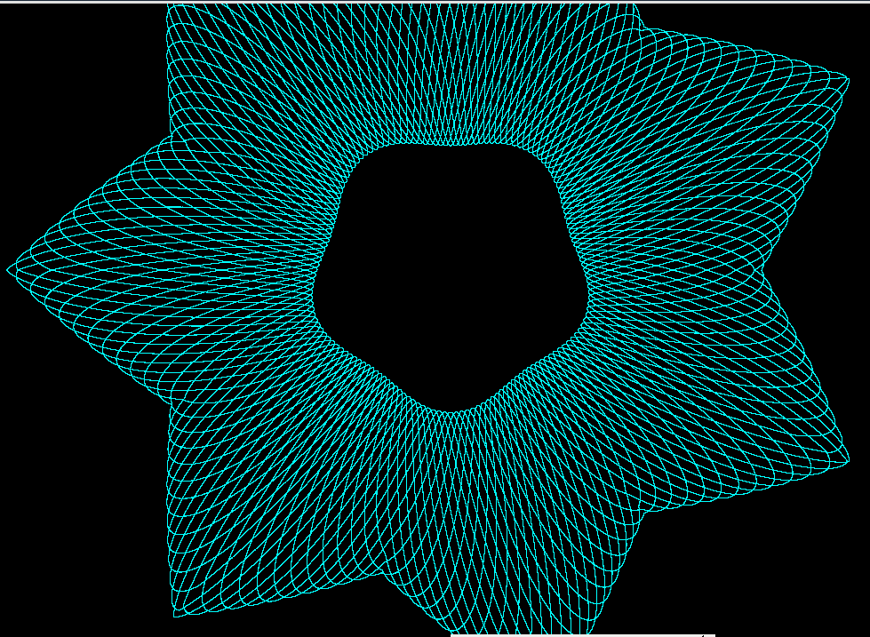

Playing Around With Guilloche Patterns
Ok, how about using our arbitrary path function to form an envelope?

Not bad!
The outer envelope function is defined like so:
/* calculate outer envelope shape... */
outerx = polygonx(t, period, starx, stary, tlen, npoints, total_len);
outery = polygony(t, period, starx, stary, tlen, npoints, total_len);
with starx[] and stary[] being filled out with the vertices of a 7 pointed star.
We do have to be careful that the period matches what is used for the inner envelope function and the drawing function.
See: guilloche14.pde